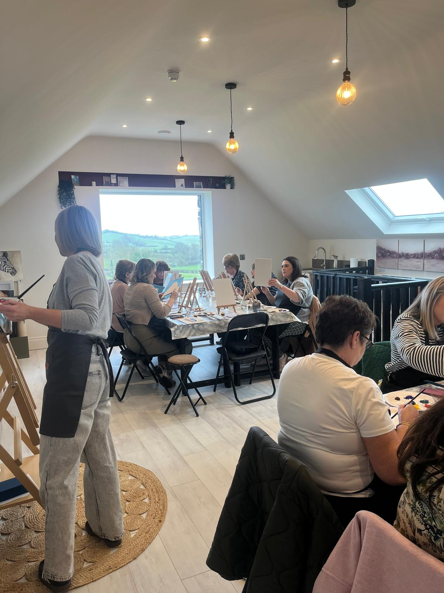

Art workshops & Tea
Arts and crafts
Relaxed art workshops for adults at Studio 50 in Carnagh, Co. Armagh, BT60 3HZ. Enjoy two hours of calm and creativity with professional artist Trish Redmond. Classes suit beginners, with guidance throughout to ensure everyone goes home with a completed artwork, and all materials are provided. Come alone or bring a friend and enjoy time in a relaxed environment with like-minded people, with tea, coffee and freshly baked treats served. Check Trish Redmond's social media for upcoming events. Studio 50 is also open for private art workshops - contact Trish for more information.
Verified 2026-05-04T15:25:46
Contact: info@trishredmondart.com
Address: 50 Carrickaduff Road
View on Google Maps →
Visit Website
View on Google Maps →